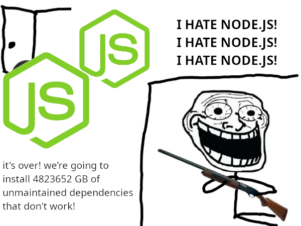

The state of darknet access on Android
published: 2022-07-11
Although I've been publishing things on the internet since I was about eleven, it took me until I was seventeen to get reliable access to a computer of my own and nineteen to set up my first Tor hidden service, back when v2 addresses were a thing and one had a hope of memorizing the URL to share to others. Meaning, up until then, I was sharecropping on someone else's server: Blogger at first, then WordPress once I realized how evil Google was, then Neocities until I was harrassed off one day.
If I knew back then what I do now, then obviously I would have never put anything on the clearnet to begin with. What creative ideas did I let wither inside me because I had to constantly toe the line of being grounded and electronics confiscated for something innocuous? (So my brothers can openly joke about porn and violence against women and my parents refuse to do anything, but I wrote one poem about my ex-girlfriend that I had when I was fourteen- and while it wasn't very good by my current standards, I certainly wasn't wishing violence against the teenager- and they took all my devices and isolated me from my friends for a week...?) I can only guess how much better at writing I would be today if I hadn't had to constantly bite my tongue.
But Tor hidden services require a server, being that Tor is a client-server model. And while I cannot remember whether or not Orbot had hosting support back in 2014 when I was using it to get past my middle school firewall, I can attest that not only does Orbot have hosting support nowadays, but there are also many more options for publishing content on the "dark web" with nothing more than a phone and a little technical expertise.
For this post, I attempted to do as much as possible with that same device I spent so many hours typing into the WordPress editor on: a Motorola Moto X, Verizon edition, Android codename "ghost". It has not seen system updates in about five years, forever stuck on Android 5.1, and I have neither the bandwidth nor the patience to attempt to compile an abandoned version of LineageOS just so I can have Android 6.0 instead. For apps that require a more recent version of Android or otherwise crashed on the Moto X, I instead used the phone I had after it, a Samsung Galaxy Note 3 with the latest nightly of LineageOS (meaning some minor point version of Android 11 at the time of writing). For client-server darknets, I used ServeIt, available on F-Droid, as the backend server; it only supports static hosting from a directory of files, meaning no dynamic applications, but that would have been all I needed back then.
Tor
Once upon a time, there was a "Tor Browser" app named Orweb which was little more than an Android WebView wrapped in a very poorly-made UI. That eventually got abandoned and replaced with Orfox, which was slightly better and also allowed for niceties like bookmarks and tabs. (I am going off my memory from about a decade ago, so don't bother emailing me if I got something wrong.) Nowadays we are a bit more spoiled with an official Tor Browser. However, it seems to crash a lot, so I prefer to browser Tor hidden services on Android using Privacy Browser instead.
Orbot is best in class as far as "Tor on Android" goes, and I know of no other (non-proprietary) solution that doesn't come coupled to a browser. In Orbot, you can set up a hidden service by going to the meatball (three dots) menu, pressing "Onion Services", then "Hosted Onion Services". Ensure that "User services" is selected and then press the plus button in the lower-right corner. "Local port" should be the port ServeIt is running on, and "Onion Port" should be 80 as that is the default HTTP port. (You can make it something else, but then you would need to share that as part of the URL.) Long-pressing the service URL once created will show an option to backup the keys or copy the URL to the clipboard.
I2P
There are two I2P apps on F-Droid that I know of and have used. The primary one is slow and buggy and features a built-in browser that is even worse than Orweb was back in the day. Therefore I recommend using i2pd instead. Any browser can be the "I2P browser" if set to use localhost port 4444 as HTTP proxy; the aforementioned "Privacy Browser" has a preset in the proxy menu to use I2P without messing with port numbers.
Unlike Orbot, i2pd stores all of its settings and keys in the filesystem instead of in the app settings. (This may or may not be a security risk depending on your threat model.) In your device's home directory will be a folder named "i2pd". Inside is the file tunnels.conf. If your file manager has the option to manually open the file as text, use that and open it in your favorite text editor; otherwise temporarily rename the file to tunnels.txt to edit it.
At the end of the file, add the following:
[server] type = http host = 127.0.0.1 port = 8888 keys = http.dat
Please note that port 8888 in this example is what ServeIt was running on. If yours is on a different port, then change the number in the above config accordingly.
If you renamed the file, change it back to tunnels.conf. Go back to the i2pd app, press on the meatball menu and then "Reload tunnels", then "Open Web Console" and "I2P tunnels" to get the new URL of your eepsite.
Yggdrasil
There is a Yggdrasil app which I have successfully used to navigate Yggdrasil sites before on my main phone, but it continuously crashed on both my Moto X and Note 3. On my main phone (a Samsung Galaxy S9) it was hard to see the full IP address... and the request to ServeIt from a different device also running Yggdrasil on the same network (so autopeering would have occurred) timed out. As Yggdrasil runs on Linux by creating a new virtual network adapter so that it can coexist with an existing network stack (instead of using proxies for access like Tor) and none of my devices are rooted, it does not make sense to attempt to compile and run it in Termux or UserLAnd.
Lokinet
There exists a dump of Lokinet binaries, including APKs for Android, run by the developers... but I was immediately greeted with the following message:
Builds from this server may work, may fail, may wipe your hard drive without asking, and are entirely unsupported.
Being that Lokinet has a personal reputation of being clunky and inelegant at best and downright non-functional at usual, I did not go on with high expectations. My hopes were not bolstered by the fact that half of the Android binaries were named "anrdoid". Very classy. Truly the attention to detail I want to see in an anonymity network.
The Lokinet app white-screened and then crashed on the Moto X. It ran on the Note 3 (at least, it said it was running...?) but no pages loaded.
Freenet
There is a version of Freenet mobile on F-Droid that I've found works wonderfully on my current phone. As it uses the same FProxy interface as the desktop version, everything works the same, from adding bookmarks to managing peered friends to browsing sites. Although the app ran on the Moto X, it hung at "Starting up". It also seemed to make Orbot in the background go berserk, constantly crashing and bringing itself back up again.
As for publishing, jSite, which I use to publish freesites on the desktop, is a no-go unless one wants to spend several hours setting up a Java runtime environment and an X server and a desktop environment in either Termux or AnLinux. While I could probably do this on my current phone with little issue using desktop mode and my wireless mouse and keyboard, for most of the Moto X's useful lifetime (the battery has been shot and nonfunctional for a few years now) I did not have even so much as a Bluetooth keyboard and was stuck to tapping on the screen.
The Freenet devs, however, have provided a simpler method of freesite publishing for those unable to access an X server. Run the following in Termux:
termux-setup-storage pkg install git python3 git clone https://github.com/freenet/pyFreenet cd pyFreenet
To upload a single file. run the following command: python ./fcpupload ~/storage/shared/path/to/file
(You can also just use the FProxy interface from a browser.)
To make an updatable freesite:
python ~/pyFreenet/freesitemgr add python ~/pyFreenet/freesitemgr listall python ~/pyFreenet/freesitemgr update NAME_OF_FREESITE
Please note that it may take a great while depending on the CPU speed of your phone, your internet speeds, and the size of the freesite.
ZeroNet
There have been several ZeroNet apps for Android. The most feature-packed is ZeroNetX Mobile, which does not seem to be on F-Droid. Please keep in mind, however, that the latest public build as of writing is from December 2021. It hung on first start on my Moto X, but worked on the Note 3.
After the app downloads all assets, the UI should start in settings. Make sure to enable "Public DataFolder" and "Disable Battery Optimization".
After initialization and first start, go to ZeroHello and then open the left side menu. Wait for all zites to finish updating, then click the meatball menu by "Scribe" and then "Clone". If you're not good at HTML and want an in-browser editor and built-in comment support, you're done and can get to writing. If you want to drop your own HTML files into the zite, open your file manager and go to Android/Data/in.canews.zeronetmobile/files/ZITEHASHHERE and edit/add/delete to your delight. (Just leave content.json alone, as that contains some of your private keys.) Go back to your zite in whatever browser you're using and hit the "Sign & Publish new content" button. It may fail since the zite is new and has no seeders, but that can be fixed by sharing the zite URL with some others who may be interested in your content.
IPFS
The official IPFS client requires Android 9.0 or newer, so it can't run on my Moto X. Termux to compile the CLI binary won't run on the Moto X either since it requires Android 7.0 or newer. I did not attempt to compile it in UserLAnd, and back in 2014 I wouldn't have known how to compile anything anyway. The IPFS app in my experience does not run well on any device and has issues with retrieving data, even from peers on the same network as it. (Plus the QR code scanner makes an annoying beep.)
To compile IPFS in Termux, run the following:
pkg install golang build-essential file git git clone https://github.com/ipfs/go-ipfs/ cd go-ipfs make build ./ipfs init --profile=lowpower
From there, all IPFS commands work as usual, but you must find a way to run the daemon in the background.
Hypercore
Gateway Browser, which attempted to be "Beaker Browser but for Android", was last updated a year ago, and the developer never provided any publically available binaries, testing or not. The repo was so large that I had issues downloading it from my home connection; I had to clone it on my VPS and then move the git tree elsewhere and download the other files through SFTP to reduce it from half a gigabyte to only a few megabytes.
The README's instructions to compile it were absolutely awful and vague. When I finally got npm and Node.js working on my machine, I ran node ci to install the dependencies for the app, and at the end I got:
76 vulnerabilities (2 low, 34 moderate, 24 high, 16 critical)
I love unmaintained software!!
The build failed. What did you expect from Node.js?
Hypercore, the protocol Beaker Browser started using once they abandoned Dat, apparently provides its own CLI... unsurprisingly also written in Node.js like so much other "next internet" garbage. This was slightly easier to install, although I don't see how my early-teenage self would have even known how to look for this.
UserLAnd failed every npm command with "Illegal instruction". AnLinux in a Termux install got as far as running npm install -g @hyperspace/cli before npm crashed at the end with the message "Exit handler never called!"

Hosting on mobile comes with two obvious challenges:
- When using a client-server model, the phone will likely have less "uptime" as far as the network is concerned than an actual server running somewhere. Not everyone has the benefit of a persistent Internet connection, much less one fast enough to handle more than a light load of traffic, or the battery life to safely have one's device connected to a network and pumping data 24/7. While mobile data can help alleviate network availability, not everyone has an "unlimited" data plan, and even "unlimited" ones often have a set amount of data at high speeds usable every month before the user is kicked to a subpar speed for the rest of that billing month, which may not be fast enough for hosting purposes. These mobile servers would be even more vulnerable to DDoS attacks. Being that phones are used for a hell of a lot more than just hosting and the trend of using chat apps instead of traditional SMS, network congestion and increased battery drain caused by a flood of traffic to one's hidden service could lead to a life-threatening situation.
- When using a peer-to-peer model, not all mobile networks are friendly or accomodating towards peer-to-peer traffic. In some networks, whether mobile data or WiFi, said traffic may be filtered or blocked or even illegal in some jurisdictions. With ZeroNet, for instance, a VPN can be used to circumvent any blocks for the purposes of viewing content, but until one gets a substantial amount of peers on their own zite, said zite's availability is restricted by one's ability to get a certain port open on the network, which is often not possible with free VPNs or on mobile networks.
Despite these challenges, the state of hosting one's content on darknets via Android is much more stable and accessible than it was several years ago. But many of these darknets still depend on being able to access the wider Internet to reach the servers responsible for controlling the darknet: Tor is heavily centralized in the sense that the network depends on the existence of a few consensus nodes, and the app used in the ZeroNet section of this post depends on Github to retrieve the Python 3 runtime and other dependencies, and Yggdrasil requires at least one public peer configured in order to talk to devices outside of the local network. As much as I dislike the state of ZeroNet's development, it would probably be the most functional in a situation where Internet access is limited and one only has an Android device and needs to share information, followed by Freenet.
As far as creating that information, whether webpages or books or other media? Well, that is a problem for a later post.
CC BY-NC-SA 4.0 © Vane Vander